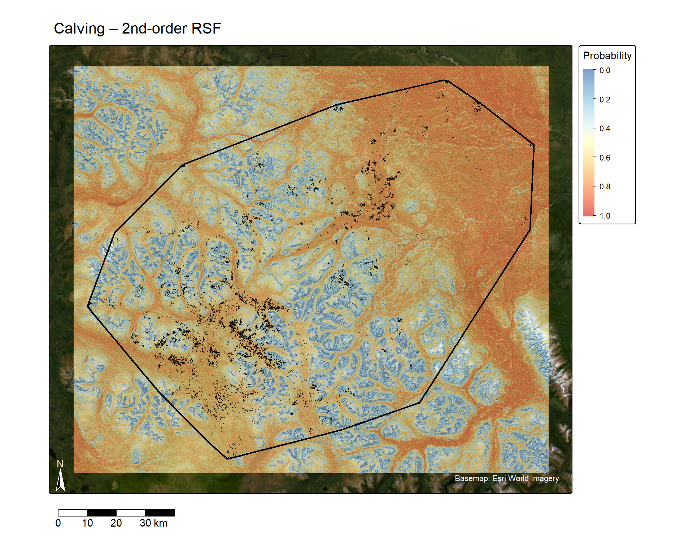
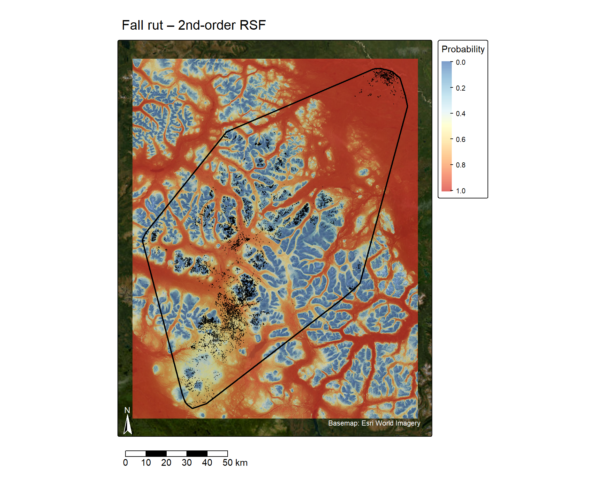
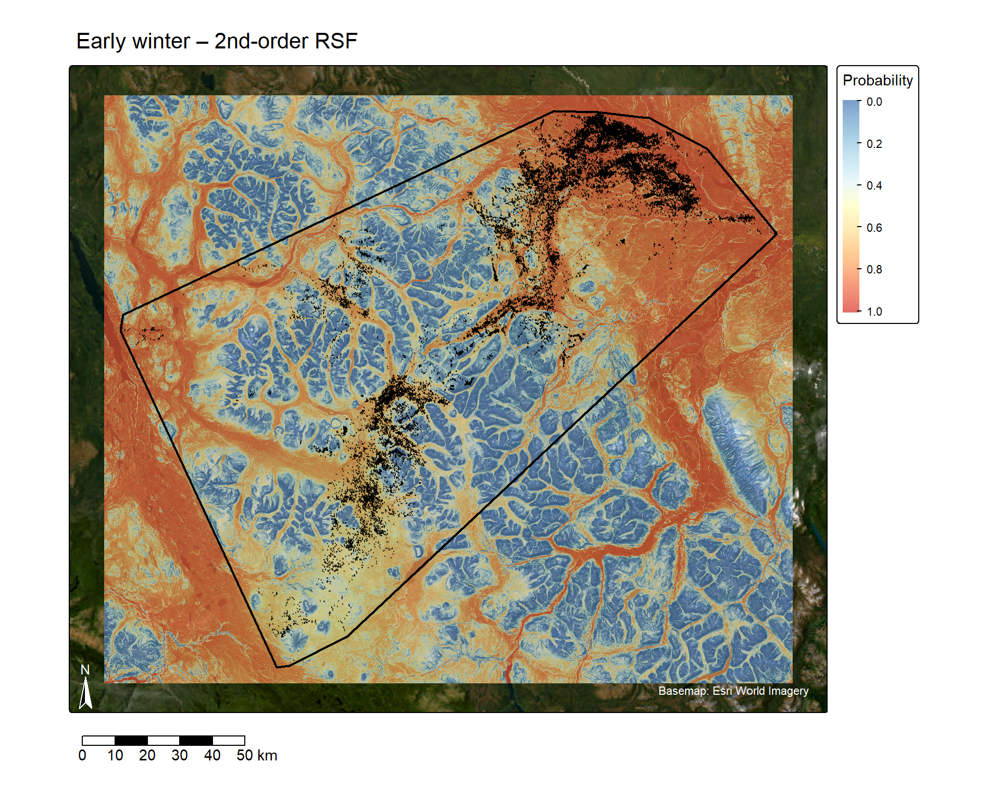
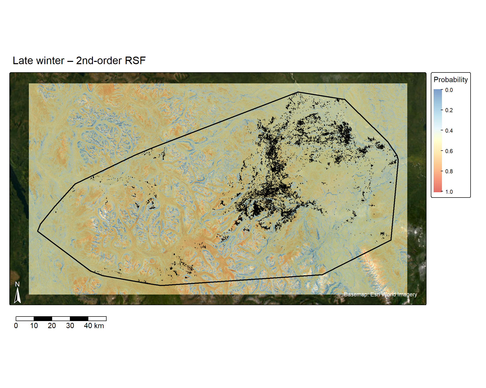
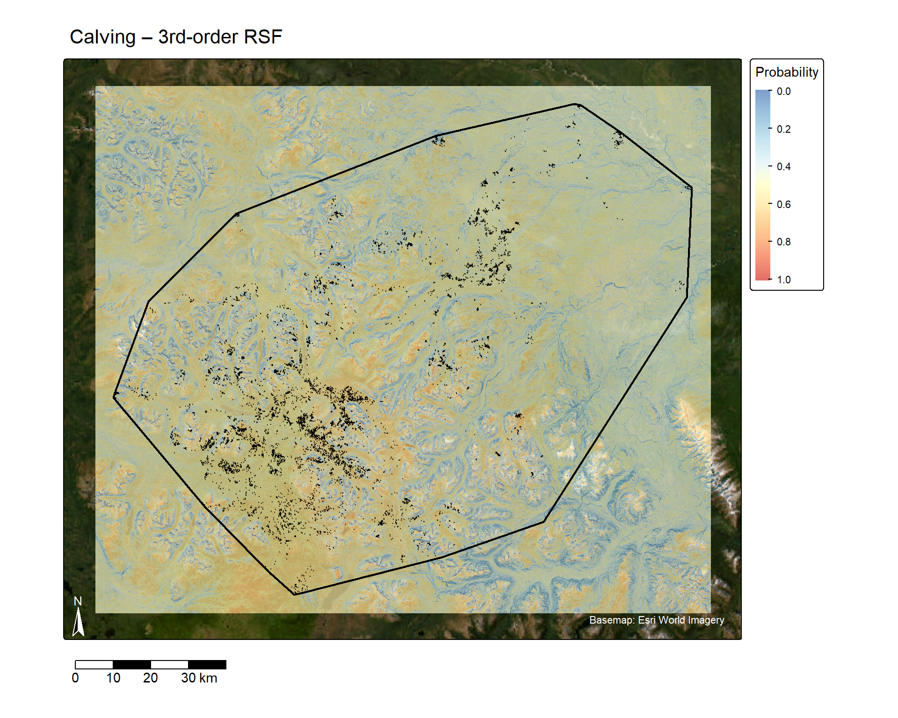
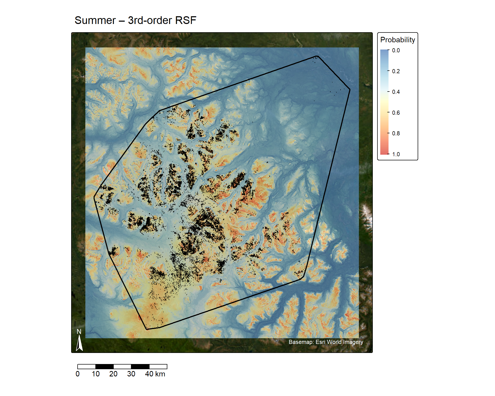
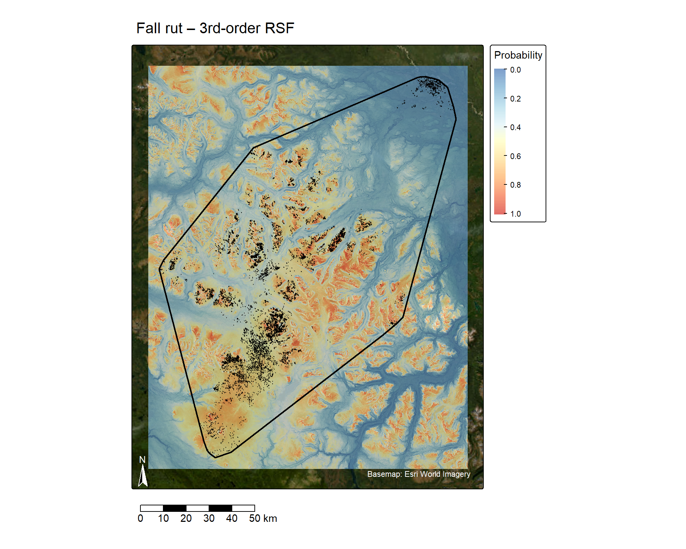
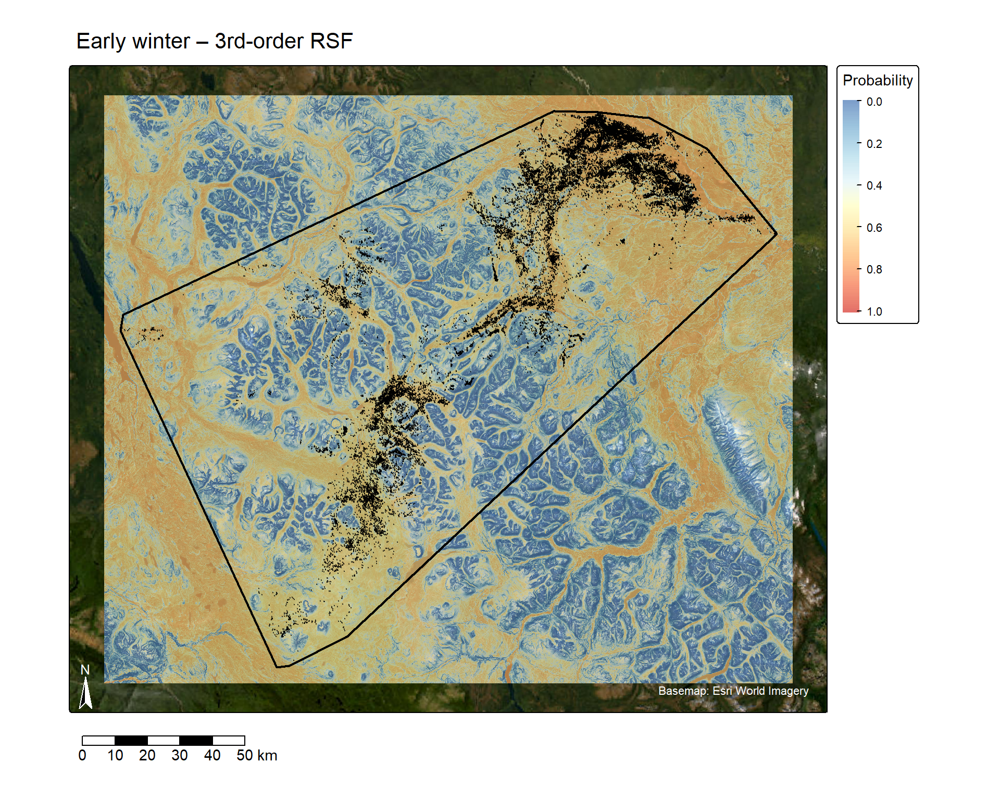
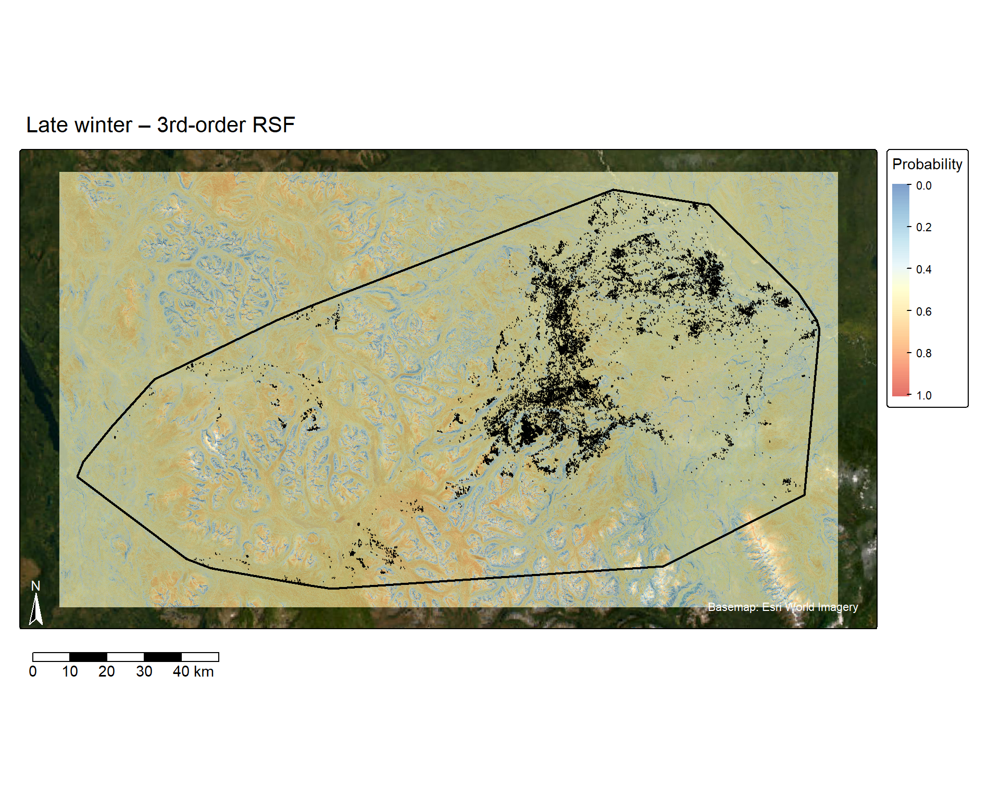

Code
trk_all <- caribou_raw |>
make_track(x, y, t, id = id, crs = 4326) |>
transform_coords(crs_to = target_crs)The Little Rancheria caribou herd occupies a range spanning several seasonal phases (calving, summer, fall rut, early winter, late winter), each associated with potentially distinct habitat requirements. Resource selection functions (RSFs) provide a statistical framework for quantifying how strongly animals select landscape features relative to their availability, and are commonly estimated at multiple spatial scales, or “orders of selection” (Johnson 1980): 2nd-order selection describes placement of an individual’s home range within the broader study area, while 3rd-order selection describes use of locations within that home range.
This report summarizes seasonal 2nd- and 3rd-order RSFs fit for the Little Rancheria herd from GPS telemetry data and terrain covariates derived from a regional digital elevation model (DEM).
The full analysis workflow is implemented in little_rancheria_rsf_workflow.R, run once per season by setting the season1 variable ("Calving", "Summer", "Fall rut", "Early winter", "Late winter", or "Annual") and re-running the script; outputs are written to a folder named for that season. The sections below summarize the workflow; code shown is illustrative (eval: false) rather than re-executed in this report.
GPS telemetry fixes (caribou.csv) were filtered to the season of interest using a phase column, parsed to timestamps, and converted to amt tracks per individual (make_track()), reprojected to match the CRS of a regional DEM (mrdem.tif).
trk_all <- caribou_raw |>
make_track(x, y, t, id = id, crs = 4326) |>
transform_coords(crs_to = target_crs)The DEM was cropped to the telemetry extent plus a 5 km buffer (to keep raster processing tractable and ensure coverage for available points near the range edge), then used to derive five topographic covariates with terra::terrain():
Slope and roughness were dropped as redundant with TRI (all three capture local ruggedness).
Home ranges were estimated per individual with both MCP and KDE (amt::hr_mcp(), amt::hr_kde(); 95% level) as a sanity check on area estimates. Autocorrelated KDE (aKDE) was deliberately not used, since it assumes range residency that does not hold for this herd.
Used-available data were generated at two scales, with a 1:10 used:available ratio:
amt::random_points()).Covariates were extracted at all used and available points and standardized (z-scores) prior to model fitting. Collinearity among the five (unstandardized) covariates was checked separately for each order’s dataset with usdm::vifstep() (threshold VIF = 5).
Models followed the weighted mixed-effects logistic regression approach of Muff, Signer & Fieberg (2020): available (pseudo-absence) points were down-weighted by assigning them a weight of 1000 relative to used points (weight = 1), and the variance of the individual-level random intercept was fixed at a large value (log(1e3)) so that it absorbs the used:available sampling ratio rather than competing with the fixed-effect slope estimates. Random slopes for elevation and TRI were left free to vary by individual.
rsf_formula <- paste(
"elevation_z + tri_z + tpi_z + northness_z + eastness_z",
"+ (1 | id)",
"+ (0 + elevation_z | id)",
"+ (0 + tri_z | id)"
)
m_2nd <- fit_weighted_rsf(second_order_dat, rsf_formula)
m_3rd <- fit_weighted_rsf(third_order_dat, rsf_formula)A full-model formula (all five topographic covariates) was fit for both orders in every season; the script also includes a model_selection() helper comparing this full model against reduced topo-only candidate models via AICc, for use once additional covariate layers (e.g. disturbance features) are added.
The fitted fixed effects from each order’s model were used to predict a population-level (fixed-effects-only, re.form = NA) RSF surface across the cropped landscape. Each prediction re-derives the z-standardization used to fit that model – 2nd- and 3rd-order used-available data were standardized separately (Section 6 above), so the 2nd- and 3rd-order covariate means/sds differ and each prediction stack is built from its own model’s training data. Rather than calling terra::predict() directly on the glmmTMB object (which can build an oversized in-memory model matrix per raster block and trigger std::bad_alloc on large rasters), the linear predictor was computed by hand as raster algebra from the fixed-effect coefficients and covariate rasters, then back-transformed to the probability scale with the inverse logit. The results for each season were saved as little_rancheria_rsf_2ndorder.tif and little_rancheria_rsf_3rdorder.tif.
Results are split into two sections below, one per order of selection. Within each section, seasons are shown as tabs; each tab gives the fixed- effects summary of that order’s model (m_2nd.RDS or m_3rd.RDS), the random-slope SDs (among-individual variation in selection strength), the corresponding predictive RSF surface (little_rancheria_rsf_2ndorder.tif or little_rancheria_rsf_3rdorder.tif) with that season’s GPS relocations and 100% MCP overlaid, and a short interpretation of that map. Seasons/orders that haven’t been (re-)run yet are flagged rather than breaking the render. The “Annual” model is fit separately by the workflow script but omitted from these season-by-season results.
2nd-order models describe selection of home-range placement within the broader herd/study-area extent.
m_2nd <- load_model(paste0(output_dir,"Calving/m_2nd.RDS"))
if (!is.null(m_2nd)) kable(tidy_fixed(m_2nd), caption = "Calving – 2nd-order fixed effects")| Term | Estimate | Std. Error | z value | p value |
|---|---|---|---|---|
| (Intercept) | -0.002 | 169.032 | 0.000 | 1.000 |
| elevation_z | -0.315 | 0.189 | -1.671 | 0.095 |
| tri_z | -0.704 | 0.211 | -3.334 | 0.001 |
| tpi_z | 0.309 | 0.009 | 35.288 | 0.000 |
| northness_z | -0.136 | 0.009 | -15.212 | 0.000 |
| eastness_z | -0.038 | 0.009 | -4.309 | 0.000 |
if (!is.null(m_2nd)) {
rt <- tidy_ranef(m_2nd)
rt <- rt[rt$Term != "(Intercept)", ]
kable(rt, caption = "Calving – 2nd-order random-slope SDs (by id); random-intercept variance is fixed by design and omitted")
}| Group | Term | SD | |
|---|---|---|---|
| id.1 | id.1 | elevation_z | 1.082 |
| id.2 | id.2 | tri_z | 1.220 |
r_2nd <- load_raster(paste0(output_dir,"Calving/little_rancheria_rsf_2ndorder.tif"))
gps_pts <- load_vector(paste0(output_dir,"Calving/gps_points.gpkg"))
mcp_100 <- load_vector(paste0(output_dir,"Calving/mcp_100.gpkg"))
if (!is.null(r_2nd)) {
m <- rsf_map(r_2nd, title = "Calving – 2nd-order RSF")
if (!is.null(mcp_100)) m <- m + tm_shape(mcp_100) + tm_borders(col = "black", lwd = 2)
if (!is.null(gps_pts)) m <- m + tm_shape(gps_pts) + tm_dots(col = "black", size = 0.02, alpha = 0.5)
m
}── tmap v3 code detected ───────────────────────────────────────────────────────[v3->v4] `tm_dots()`: use 'fill' for the fill color of polygons/symbols
(instead of 'col'), and 'col' for the outlines (instead of 'border.col').
[v3->v4] `tm_dots()`: use `fill_alpha` instead of `alpha`.
SpatRaster object downsampled to 2929 by 3416 cells.
[basemaps] Tiles from "Esri.WorldImagery" will be projected so details (e.g.
text) could appear blurry
This message is displayed once every 8 hours.
if (!is.null(m_2nd)) interpret_fixed(m_2nd)Strongest evidence of selection was for terrain position (TPI) (selection for, β = 0.31, p < 0.001); northness (avoidance of, β = -0.14, p < 0.001); eastness (avoidance of, β = -0.04, p < 0.001); terrain ruggedness (TRI) (avoidance of, β = -0.70, p = 0.001). elevation showed no clear evidence of selection.
m_2nd <- load_model(paste0(output_dir,"Summer/m_2nd.RDS"))
if (!is.null(m_2nd)) kable(tidy_fixed(m_2nd), caption = "Summer – 2nd-order fixed effects")| Term | Estimate | Std. Error | z value | p value |
|---|---|---|---|---|
| (Intercept) | -0.001 | 174.069 | 0.000 | 1 |
| elevation_z | 0.968 | 0.062 | 15.544 | 0 |
| tri_z | -0.593 | 0.073 | -8.089 | 0 |
| tpi_z | -0.083 | 0.005 | -17.973 | 0 |
| northness_z | -0.057 | 0.005 | -11.060 | 0 |
| eastness_z | -0.087 | 0.005 | -16.892 | 0 |
if (!is.null(m_2nd)) {
rt <- tidy_ranef(m_2nd)
rt <- rt[rt$Term != "(Intercept)", ]
kable(rt, caption = "Summer – 2nd-order random-slope SDs (by id); random-intercept variance is fixed by design and omitted")
}| Group | Term | SD | |
|---|---|---|---|
| id.1 | id.1 | elevation_z | 0.355 |
| id.2 | id.2 | tri_z | 0.417 |
r_2nd <- load_raster(paste0(output_dir,"Summer/little_rancheria_rsf_2ndorder.tif"))
gps_pts <- load_vector(paste0(output_dir,"Summer/gps_points.gpkg"))
mcp_100 <- load_vector(paste0(output_dir,"Summer/mcp_100.gpkg"))
if (!is.null(r_2nd)) {
m <- rsf_map(r_2nd, title = "Summer – 2nd-order RSF")
if (!is.null(mcp_100)) m <- m + tm_shape(mcp_100) + tm_borders(col = "black", lwd = 2)
if (!is.null(gps_pts)) m <- m + tm_shape(gps_pts) + tm_dots(col = "black", size = 0.02, alpha = 0.5)
m
}── tmap v3 code detected ───────────────────────────────────────────────────────[v3->v4] `tm_dots()`: use `fill_alpha` instead of `alpha`.
SpatRaster object downsampled to 3261 by 3068 cells.if (!is.null(m_2nd)) interpret_fixed(m_2nd)Strongest evidence of selection was for terrain position (TPI) (avoidance of, β = -0.08, p < 0.001); eastness (avoidance of, β = -0.09, p < 0.001); elevation (selection for, β = 0.97, p < 0.001); northness (avoidance of, β = -0.06, p < 0.001); terrain ruggedness (TRI) (avoidance of, β = -0.59, p < 0.001).
m_2nd <- load_model(paste0(output_dir,"Fall rut/m_2nd.RDS"))
if (!is.null(m_2nd)) kable(tidy_fixed(m_2nd), caption = "Fall rut – 2nd-order fixed effects")| Term | Estimate | Std. Error | z value | p value |
|---|---|---|---|---|
| (Intercept) | -0.009 | 176.779 | 0.000 | 1.000 |
| elevation_z | -1.853 | 2.774 | -0.668 | 0.504 |
| tri_z | -0.778 | 0.140 | -5.536 | 0.000 |
| tpi_z | -0.041 | 0.009 | -4.516 | 0.000 |
| northness_z | -0.027 | 0.009 | -2.906 | 0.004 |
| eastness_z | -0.056 | 0.009 | -6.096 | 0.000 |
if (!is.null(m_2nd)) {
rt <- tidy_ranef(m_2nd)
rt <- rt[rt$Term != "(Intercept)", ]
kable(rt, caption = "Fall rut – 2nd-order random-slope SDs (by id); random-intercept variance is fixed by design and omitted")
}| Group | Term | SD | |
|---|---|---|---|
| id.1 | id.1 | elevation_z | 15.619 |
| id.2 | id.2 | tri_z | 0.778 |
r_2nd <- load_raster(paste0(output_dir,"Fall rut/little_rancheria_rsf_2ndorder.tif"))
gps_pts <- load_vector(paste0(output_dir,"Fall rut/gps_points.gpkg"))
mcp_100 <- load_vector(paste0(output_dir,"Fall rut/mcp_100.gpkg"))
if (!is.null(r_2nd)) {
m <- rsf_map(r_2nd, title = "Fall rut – 2nd-order RSF")
if (!is.null(mcp_100)) m <- m + tm_shape(mcp_100) + tm_borders(col = "black", lwd = 2)
if (!is.null(gps_pts)) m <- m + tm_shape(gps_pts) + tm_dots(col = "black", size = 0.02, alpha = 0.5)
m
}── tmap v3 code detected ───────────────────────────────────────────────────────[v3->v4] `tm_dots()`: use `fill_alpha` instead of `alpha`.
SpatRaster object downsampled to 3553 by 2815 cells.
if (!is.null(m_2nd)) interpret_fixed(m_2nd)Strongest evidence of selection was for eastness (avoidance of, β = -0.06, p < 0.001); terrain ruggedness (TRI) (avoidance of, β = -0.78, p < 0.001); terrain position (TPI) (avoidance of, β = -0.04, p < 0.001); northness (avoidance of, β = -0.03, p = 0.004). elevation showed no clear evidence of selection.
m_2nd <- load_model(paste0(output_dir,"Early winter/m_2nd.RDS"))
if (!is.null(m_2nd)) kable(tidy_fixed(m_2nd), caption = "Early winter – 2nd-order fixed effects")| Term | Estimate | Std. Error | z value | p value |
|---|---|---|---|---|
| (Intercept) | -0.002 | 164.389 | 0.000 | 1.000 |
| elevation_z | -0.977 | 0.190 | -5.131 | 0.000 |
| tri_z | -1.400 | 0.094 | -14.819 | 0.000 |
| tpi_z | 0.041 | 0.008 | 5.269 | 0.000 |
| northness_z | 0.009 | 0.005 | 1.776 | 0.076 |
| eastness_z | -0.057 | 0.005 | -11.410 | 0.000 |
if (!is.null(m_2nd)) {
rt <- tidy_ranef(m_2nd)
rt <- rt[rt$Term != "(Intercept)", ]
kable(rt, caption = "Early winter – 2nd-order random-slope SDs (by id); random-intercept variance is fixed by design and omitted")
}| Group | Term | SD | |
|---|---|---|---|
| id.1 | id.1 | elevation_z | 1.154 |
| id.2 | id.2 | tri_z | 0.556 |
r_2nd <- load_raster(paste0(output_dir,"Early winter/little_rancheria_rsf_2ndorder.tif"))
gps_pts <- load_vector(paste0(output_dir,"Early winter/gps_points.gpkg"))
mcp_100 <- load_vector(paste0(output_dir,"Early winter/mcp_100.gpkg"))
if (!is.null(r_2nd)) {
m <- rsf_map(r_2nd, title = "Early winter – 2nd-order RSF")
if (!is.null(mcp_100)) m <- m + tm_shape(mcp_100) + tm_borders(col = "black", lwd = 2)
if (!is.null(gps_pts)) m <- m + tm_shape(gps_pts) + tm_dots(col = "black", size = 0.02, alpha = 0.5)
m
}── tmap v3 code detected ───────────────────────────────────────────────────────[v3->v4] `tm_dots()`: use `fill_alpha` instead of `alpha`.
SpatRaster object downsampled to 2922 by 3423 cells.
if (!is.null(m_2nd)) interpret_fixed(m_2nd)Strongest evidence of selection was for terrain ruggedness (TRI) (avoidance of, β = -1.40, p < 0.001); eastness (avoidance of, β = -0.06, p < 0.001); terrain position (TPI) (selection for, β = 0.04, p < 0.001); elevation (avoidance of, β = -0.98, p < 0.001). northness showed no clear evidence of selection.
m_2nd <- load_model(paste0(output_dir,"Late winter/m_2nd.RDS"))
if (!is.null(m_2nd)) kable(tidy_fixed(m_2nd), caption = "Late winter – 2nd-order fixed effects")| Term | Estimate | Std. Error | z value | p value |
|---|---|---|---|---|
| (Intercept) | -0.002 | 162.234 | 0.000 | 1 |
| elevation_z | 0.403 | 0.065 | 6.203 | 0 |
| tri_z | -0.516 | 0.043 | -11.962 | 0 |
| tpi_z | 0.150 | 0.005 | 29.917 | 0 |
| northness_z | -0.062 | 0.005 | -12.766 | 0 |
| eastness_z | -0.111 | 0.005 | -23.002 | 0 |
if (!is.null(m_2nd)) {
rt <- tidy_ranef(m_2nd)
rt <- rt[rt$Term != "(Intercept)", ]
kable(rt, caption = "Late winter – 2nd-order random-slope SDs (by id); random-intercept variance is fixed by design and omitted")
}| Group | Term | SD | |
|---|---|---|---|
| id.1 | id.1 | elevation_z | 0.397 |
| id.2 | id.2 | tri_z | 0.256 |
r_2nd <- load_raster(paste0(output_dir,"Late winter/little_rancheria_rsf_2ndorder.tif"))
gps_pts <- load_vector(paste0(output_dir,"Late winter/gps_points.gpkg"))
mcp_100 <- load_vector(paste0(output_dir,"Late winter/mcp_100.gpkg"))
if (!is.null(r_2nd)) {
m <- rsf_map(r_2nd, title = "Late winter – 2nd-order RSF")
if (!is.null(mcp_100)) m <- m + tm_shape(mcp_100) + tm_borders(col = "black", lwd = 2)
if (!is.null(gps_pts)) m <- m + tm_shape(gps_pts) + tm_dots(col = "black", size = 0.02, alpha = 0.5)
m
}── tmap v3 code detected ───────────────────────────────────────────────────────[v3->v4] `tm_dots()`: use `fill_alpha` instead of `alpha`.
SpatRaster object downsampled to 2365 by 4229 cells.
if (!is.null(m_2nd)) interpret_fixed(m_2nd)Strongest evidence of selection was for terrain position (TPI) (selection for, β = 0.15, p < 0.001); eastness (avoidance of, β = -0.11, p < 0.001); northness (avoidance of, β = -0.06, p < 0.001); terrain ruggedness (TRI) (avoidance of, β = -0.52, p < 0.001); elevation (selection for, β = 0.40, p < 0.001).
3rd-order models describe selection of locations within each individual’s own home range.
m_3rd <- load_model(paste0(output_dir,"Calving/m_3rd.RDS"))
if (!is.null(m_3rd)) kable(tidy_fixed(m_3rd), caption = "Calving – 3rd-order fixed effects")| Term | Estimate | Std. Error | z value | p value |
|---|---|---|---|---|
| (Intercept) | -0.002 | 169.034 | 0.000 | 1.000 |
| elevation_z | 0.272 | 0.075 | 3.625 | 0.000 |
| tri_z | -0.501 | 0.140 | -3.576 | 0.000 |
| tpi_z | 0.252 | 0.008 | 31.346 | 0.000 |
| northness_z | -0.131 | 0.009 | -14.677 | 0.000 |
| eastness_z | 0.026 | 0.009 | 2.955 | 0.003 |
if (!is.null(m_3rd)) {
rt <- tidy_ranef(m_3rd)
rt <- rt[rt$Term != "(Intercept)", ]
kable(rt, caption = "Calving – 3rd-order random-slope SDs (by id); random-intercept variance is fixed by design and omitted")
}| Group | Term | SD | |
|---|---|---|---|
| id.1 | id.1 | elevation_z | 0.418 |
| id.2 | id.2 | tri_z | 0.802 |
r_3rd <- load_raster(paste0(output_dir,"Calving/little_rancheria_rsf_3rdorder.tif"))
gps_pts <- load_vector(paste0(output_dir,"Calving/gps_points.gpkg"))
mcp_100 <- load_vector(paste0(output_dir,"Calving/mcp_100.gpkg"))
if (!is.null(r_3rd)) {
m <- rsf_map(r_3rd, title = "Calving – 3rd-order RSF")
if (!is.null(mcp_100)) m <- m + tm_shape(mcp_100) + tm_borders(col = "black", lwd = 2)
if (!is.null(gps_pts)) m <- m + tm_shape(gps_pts) + tm_dots(col = "black", size = 0.02, alpha = 0.5)
m
}── tmap v3 code detected ───────────────────────────────────────────────────────[v3->v4] `tm_dots()`: use `fill_alpha` instead of `alpha`.
SpatRaster object downsampled to 2929 by 3416 cells.
if (!is.null(m_3rd)) interpret_fixed(m_3rd)Strongest evidence of selection was for terrain position (TPI) (selection for, β = 0.25, p < 0.001); northness (avoidance of, β = -0.13, p < 0.001); elevation (selection for, β = 0.27, p < 0.001); terrain ruggedness (TRI) (avoidance of, β = -0.50, p < 0.001); eastness (selection for, β = 0.03, p = 0.003).
m_3rd <- load_model(paste0(output_dir,"Summer/m_3rd.RDS"))
if (!is.null(m_3rd)) kable(tidy_fixed(m_3rd), caption = "Summer – 3rd-order fixed effects")| Term | Estimate | Std. Error | z value | p value |
|---|---|---|---|---|
| (Intercept) | -0.001 | 174.074 | 0.000 | 1 |
| elevation_z | 0.939 | 0.069 | 13.531 | 0 |
| tri_z | -0.610 | 0.048 | -12.731 | 0 |
| tpi_z | -0.084 | 0.005 | -17.386 | 0 |
| northness_z | -0.022 | 0.005 | -4.265 | 0 |
| eastness_z | -0.065 | 0.005 | -12.553 | 0 |
if (!is.null(m_3rd)) {
rt <- tidy_ranef(m_3rd)
rt <- rt[rt$Term != "(Intercept)", ]
kable(rt, caption = "Summer – 3rd-order random-slope SDs (by id); random-intercept variance is fixed by design and omitted")
}| Group | Term | SD | |
|---|---|---|---|
| id.1 | id.1 | elevation_z | 0.395 |
| id.2 | id.2 | tri_z | 0.269 |
r_3rd <- load_raster(paste0(output_dir,"Summer/little_rancheria_rsf_3rdorder.tif"))
gps_pts <- load_vector(paste0(output_dir,"Summer/gps_points.gpkg"))
mcp_100 <- load_vector(paste0(output_dir,"Summer/mcp_100.gpkg"))
if (!is.null(r_3rd)) {
m <- rsf_map(r_3rd, title = "Summer – 3rd-order RSF")
if (!is.null(mcp_100)) m <- m + tm_shape(mcp_100) + tm_borders(col = "black", lwd = 2)
if (!is.null(gps_pts)) m <- m + tm_shape(gps_pts) + tm_dots(col = "black", size = 0.02, alpha = 0.5)
m
}── tmap v3 code detected ───────────────────────────────────────────────────────[v3->v4] `tm_dots()`: use `fill_alpha` instead of `alpha`.
SpatRaster object downsampled to 3261 by 3068 cells.
if (!is.null(m_3rd)) interpret_fixed(m_3rd)Strongest evidence of selection was for terrain position (TPI) (avoidance of, β = -0.08, p < 0.001); elevation (selection for, β = 0.94, p < 0.001); terrain ruggedness (TRI) (avoidance of, β = -0.61, p < 0.001); eastness (avoidance of, β = -0.06, p < 0.001); northness (avoidance of, β = -0.02, p < 0.001).
m_3rd <- load_model(paste0(output_dir,"Fall rut/m_3rd.RDS"))
if (!is.null(m_3rd)) kable(tidy_fixed(m_3rd), caption = "Fall rut – 3rd-order fixed effects")| Term | Estimate | Std. Error | z value | p value |
|---|---|---|---|---|
| (Intercept) | -0.002 | 176.775 | 0.000 | 1.000 |
| elevation_z | 1.107 | 0.081 | 13.690 | 0.000 |
| tri_z | -0.589 | 0.050 | -11.818 | 0.000 |
| tpi_z | -0.048 | 0.008 | -5.747 | 0.000 |
| northness_z | 0.001 | 0.009 | 0.152 | 0.879 |
| eastness_z | -0.009 | 0.009 | -0.988 | 0.323 |
if (!is.null(m_3rd)) {
rt <- tidy_ranef(m_3rd)
rt <- rt[rt$Term != "(Intercept)", ]
kable(rt, caption = "Fall rut – 3rd-order random-slope SDs (by id); random-intercept variance is fixed by design and omitted")
}| Group | Term | SD | |
|---|---|---|---|
| id.1 | id.1 | elevation_z | 0.441 |
| id.2 | id.2 | tri_z | 0.263 |
r_3rd <- load_raster(paste0(output_dir,"Fall rut/little_rancheria_rsf_3rdorder.tif"))
gps_pts <- load_vector(paste0(output_dir,"Fall rut/gps_points.gpkg"))
mcp_100 <- load_vector(paste0(output_dir,"Fall rut/mcp_100.gpkg"))
if (!is.null(r_3rd)) {
m <- rsf_map(r_3rd, title = "Fall rut – 3rd-order RSF")
if (!is.null(mcp_100)) m <- m + tm_shape(mcp_100) + tm_borders(col = "black", lwd = 2)
if (!is.null(gps_pts)) m <- m + tm_shape(gps_pts) + tm_dots(col = "black", size = 0.02, alpha = 0.5)
m
}── tmap v3 code detected ───────────────────────────────────────────────────────[v3->v4] `tm_dots()`: use `fill_alpha` instead of `alpha`.
SpatRaster object downsampled to 3553 by 2815 cells.
if (!is.null(m_3rd)) interpret_fixed(m_3rd)Strongest evidence of selection was for elevation (selection for, β = 1.11, p < 0.001); terrain ruggedness (TRI) (avoidance of, β = -0.59, p < 0.001); terrain position (TPI) (avoidance of, β = -0.05, p < 0.001). eastness, northness showed no clear evidence of selection.
m_3rd <- load_model(paste0(output_dir,"Early winter/m_3rd.RDS"))
if (!is.null(m_3rd)) kable(tidy_fixed(m_3rd), caption = "Early winter – 3rd-order fixed effects")| Term | Estimate | Std. Error | z value | p value |
|---|---|---|---|---|
| (Intercept) | -0.001 | 164.389 | 0.000 | 1 |
| elevation_z | -0.245 | 0.057 | -4.267 | 0 |
| tri_z | -1.031 | 0.058 | -17.699 | 0 |
| tpi_z | 0.025 | 0.007 | 3.608 | 0 |
| northness_z | 0.024 | 0.005 | 4.773 | 0 |
| eastness_z | -0.042 | 0.005 | -8.426 | 0 |
if (!is.null(m_3rd)) {
rt <- tidy_ranef(m_3rd)
rt <- rt[rt$Term != "(Intercept)", ]
kable(rt, caption = "Early winter – 3rd-order random-slope SDs (by id); random-intercept variance is fixed by design and omitted")
}| Group | Term | SD | |
|---|---|---|---|
| id.1 | id.1 | elevation_z | 0.337 |
| id.2 | id.2 | tri_z | 0.334 |
r_3rd <- load_raster(paste0(output_dir,"Early winter/little_rancheria_rsf_3rdorder.tif"))
gps_pts <- load_vector(paste0(output_dir,"Early winter/gps_points.gpkg"))
mcp_100 <- load_vector(paste0(output_dir,"Early winter/mcp_100.gpkg"))
if (!is.null(r_3rd)) {
m <- rsf_map(r_3rd, title = "Early winter – 3rd-order RSF")
if (!is.null(mcp_100)) m <- m + tm_shape(mcp_100) + tm_borders(col = "black", lwd = 2)
if (!is.null(gps_pts)) m <- m + tm_shape(gps_pts) + tm_dots(col = "black", size = 0.02, alpha = 0.5)
m
}── tmap v3 code detected ───────────────────────────────────────────────────────[v3->v4] `tm_dots()`: use `fill_alpha` instead of `alpha`.
SpatRaster object downsampled to 2922 by 3423 cells.
if (!is.null(m_3rd)) interpret_fixed(m_3rd)Strongest evidence of selection was for terrain ruggedness (TRI) (avoidance of, β = -1.03, p < 0.001); eastness (avoidance of, β = -0.04, p < 0.001); northness (selection for, β = 0.02, p < 0.001); elevation (avoidance of, β = -0.24, p < 0.001); terrain position (TPI) (selection for, β = 0.02, p < 0.001).
m_3rd <- load_model(paste0(output_dir,"Late winter/m_3rd.RDS"))
if (!is.null(m_3rd)) kable(tidy_fixed(m_3rd), caption = "Late winter – 3rd-order fixed effects")| Term | Estimate | Std. Error | z value | p value |
|---|---|---|---|---|
| (Intercept) | -0.002 | 162.220 | 0.000 | 1 |
| elevation_z | 0.266 | 0.072 | 3.716 | 0 |
| tri_z | -0.371 | 0.042 | -8.758 | 0 |
| tpi_z | 0.155 | 0.005 | 31.226 | 0 |
| northness_z | -0.075 | 0.005 | -15.379 | 0 |
| eastness_z | -0.091 | 0.005 | -18.758 | 0 |
if (!is.null(m_3rd)) {
rt <- tidy_ranef(m_3rd)
rt <- rt[rt$Term != "(Intercept)", ]
kable(rt, caption = "Late winter – 3rd-order random-slope SDs (by id); random-intercept variance is fixed by design and omitted")
}| Group | Term | SD | |
|---|---|---|---|
| id.1 | id.1 | elevation_z | 0.434 |
| id.2 | id.2 | tri_z | 0.252 |
r_3rd <- load_raster(paste0(output_dir,"Late winter/little_rancheria_rsf_3rdorder.tif"))
gps_pts <- load_vector(paste0(output_dir,"Late winter/gps_points.gpkg"))
mcp_100 <- load_vector(paste0(output_dir,"Late winter/mcp_100.gpkg"))
if (!is.null(r_3rd)) {
m <- rsf_map(r_3rd, title = "Late winter – 3rd-order RSF")
if (!is.null(mcp_100)) m <- m + tm_shape(mcp_100) + tm_borders(col = "black", lwd = 2)
if (!is.null(gps_pts)) m <- m + tm_shape(gps_pts) + tm_dots(col = "black", size = 0.02, alpha = 0.5)
m
}── tmap v3 code detected ───────────────────────────────────────────────────────[v3->v4] `tm_dots()`: use `fill_alpha` instead of `alpha`.
SpatRaster object downsampled to 2365 by 4229 cells.
if (!is.null(m_3rd)) interpret_fixed(m_3rd)Strongest evidence of selection was for terrain position (TPI) (selection for, β = 0.15, p < 0.001); eastness (avoidance of, β = -0.09, p < 0.001); northness (avoidance of, β = -0.07, p < 0.001); terrain ruggedness (TRI) (avoidance of, β = -0.37, p < 0.001); elevation (selection for, β = 0.27, p < 0.001).
Seasonal RSFs provide a way to characterize how topographic selection by the Little Rancheria herd shifts across the annual cycle, at both the home-range placement (2nd-order) and within-home-range (3rd-order) scales. Comparing coefficient signs and magnitudes for elevation, terrain ruggedness (TRI), terrain position (TPI), and slope orientation (northness/eastness) across seasons can highlight, for example, whether the herd selects for higher/more rugged terrain during calving (often associated with predator avoidance) versus lower, more sheltered terrain in late winter.
A few caveats are worth keeping in mind when interpreting these results:
Overall, the workflow produces a consistent, reproducible basis for seasonal habitat mapping across the herd’s range, and is structured so that additional covariate layers or candidate model sets can be incorporated season-by-season without changing the core modeling approach.